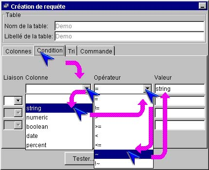
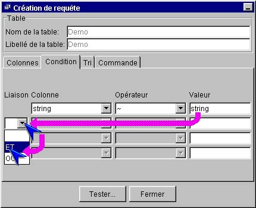

I-SIS Explorer

Guide d'utilisation
|
|
I-SIS Explorer |
|
|
Guide d'utilisation |
||
Des conditions sur les colonnes peuvent être ajoutées à la requête pour préciser sa recherche, dans le volet "Condition" du créateur de requête.
Cliquez le volet "Condition", si nécessaire, pour l'afficher au premier plan,
Sous
le champ "Colonne", première case à droite, cliquez  pour afficher les noms des colonnes de la table,
pour afficher les noms des colonnes de la table,

Cliquez le nom de la colonne, sur laquelle vous souhaitez soumettre votre première condition,
Le nom de colonne s'affiche alors dans la case, et les premières cases "Opérateur" et "Liaison" se déverrouillent,
Dans
cette case "Opérateur", cliquez  pour afficher la liste des opérateurs disponibles,
pour afficher la liste des opérateurs disponibles,
Cliquez l'opérateur souhaité,
L'opérateur s'affiche dans cette case,
Saisissez la valeur du critère, dans la première case "Valeur".
|
i |
Information : Le I-SIS Explorer contrôle la validité de la valeur saisie en fonction du type du champ sélectionné :
Pour plus d'informations concernant les différents types de données gérées par les I-TOOLS, veuillez vous référer au «Manuel de référence I-TOOLS». |
Une première condition doit être déjà saisie (cf. «Éditer une première condition»).
Dans
la dernière case "Liaison" vide et déverrouillée, suivant la
dernière condition saisie, cliquez  pour afficher la liste des liaison
disponibles,
pour afficher la liste des liaison
disponibles,
Cliquez la liaison logique avec les autres conditions, "ET" ou "OU",
La liaison retenue s'affiche, et la case colonne se déverrouille sur la même ligne. En commençant par cette case, saisissez cette condition supplémentaire en suivant la procédure précédente (cf. «Éditer une première condition»).

Copyright © 2003 BV Associates. Tous droits réservés.